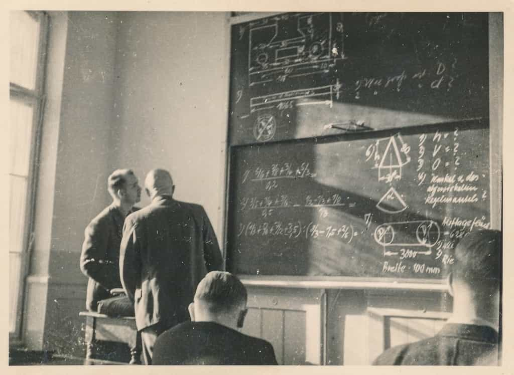

I have a rule at Asshole Consulting. If I get a unique question, it’s a statistical oddity. If I get it again, it’s a coincidence. But if I get it a third time, it’s a trend that demands attention as there are likely many more men with the same question. And the question of:
“How do I find a wife?” or “How do I meet a quality girl?”
This has come up multiple times now, thereby necessitating a discussion about it. First realize that there’s more to this topic than you think. For it’s not just about “finding a quality wife,” but avoiding a huge and costly mistake most men make. So costly, in fact, it can ruin your life and avoiding this mistake is likely more important than finding a quality wife in itself.
Stoicism, Economics, and Mortality
First, understand there is no definitive answer on how to find a marriageable or long-term quality girl in life. There is no store that sells them. They are not hanging out at some venue we’ve yet to discover. There is no strategy some PUA or red-pill seminarian has concocted that “for just $99.95 you too can learn this strategy at Slicky McSlickerson’s ‘How to Find a Wife Seminar!’“. I met my current 10-year-plus girlfriend teaching a dance class. Another couple I know met through friends. A third were set up by their parents. There is no correlation, trend, relationship, or other statistical corollary behind finding a spouse, so stop trying to look for a science where there is none to be found.

Since there is no science behind this problem, realize the nature of the problem changes. Because if there’s nothing you can tangibly “do” to find a wife, no strategy you can employ, how precisely are you supposed to find one? This presents a paradox because any attempt to “go about finding one” is an attempt to “tangibly do something” and therefore won’t work. And, therefore, as is with many problems in life, the solution does not lay within directly addressing, tackling, and solving the problem (as men are prone to do), but changing your perception of the problem, changing your understanding of the problem, and actually changing yourself in order to solve it. It is ultimately a lesson in stoicism that reminds us we only control ourselves and not others.
But there is another important lesson to learn when it comes to the pursuit of a life-long partner. And that is one of economics and mortality.
My friend and I often joked in our 30’s that had we not wasted time chasing girls in our 20’s, and instead invested it into more profitable ventures we’d have a lot more to show for it, beyond notch counts and the painassery it took us to get them. I could have had my doctorate. My buddy would have had a house paid off (arguably two). Our bank accounts would certainly be more flush with cash. And that says nothing of the decades of headache we would have spared ourselves.
These economic opportunity costs are huge. Most men, if they invested their time into themselves instead of women, would easily boost their lifetime earnings by over $1 million. We could easily retire at 40. Most of us would have no mortgage, car loans, or student loans. Not to mention the mental serenity, peace, and calm that comes with such a life. But there are also other opportunity costs in the quality of life when you put wife-hunting ahead of your own life. You forfeit adventure, hobbies, traveling, intellectualism, philosophy, reading, entrepreneurship—a nearly limitless number of things you could have pursued, enjoyed, even mastered—making your life a genuinely interesting one, had you not wasted your time on bars, nightclubs, or Tinder.
“But What About The Women?”
The problem this presents, however, is that if you’re spending your time hiking, biking, writing, swimming, studying, and pursuing a career, how are you exactly going to find a wife? Not that going clubbing or hitting girls up on Tinder was with the aim of finding a girlfriend, nor is there anything wrong with going out with the sole intention to bang. But don’t you have to pursue women at some point on some level to find a life-partner?
No.
And the reason is because living your own life is precisely what will attract women towards you, whether you intend to get married or not.
This is the biggest problem my wife-inclined and girlfriend-inclined clients fail to understand. Horse-blinded by logic (and admittedly, most of these guys are nerd STEM majors who have formulaic minds), most men will think pursuing women, putting the time and effort into approaching them, chatting them up on social media, and running various sorts of game is how you get and attract women. These things certainly don’t hurt, but you do so at a great disadvantage because what exactly do you offer them?
If you’re an accomplished 38 year old engineer who likes to go mountain climbing, spends his time at the gym, is well read on philosophy, and has traveled to Nepal, you offer a girl much more than your 18 year old contemporary who has no hobbies, interests, accomplishments, or experience in life. I liken it to being an older computer hard drive with a ton of interesting video games, programs, and apps on it, versus a brand new laptop with a blank hard drive. No girl is going to want to play with a computer with a blank hard drive. She’s always going to choose the hard drive with actual programs on it. And so it is the job of every young man to put interesting things on their hard drives.
But there’s even more at stake here than failing to attract a wife if you don’t season yourself to be an interesting and accomplished man – the risk you’ll waste your life.
Always Look Out for #1
The truth of the matter is you’re going to die. You get one, short, finite life on this planet, and you better make it count. And while there’s nothing wrong with going to a party, getting drunk, and chasing the occasional skirt, when you make the pursuit of women your #1 priority in life, you do so at the expense of your life.
All those weekends you went out partying? You could have learned to work on cars.
All those days you spent helping a girl with her homework and you were friendzoned? Could have boosted your own GPA and got a better job.
And the limitless hours you sang and danced like a monkey in a cage to impress a girls at bars? You could have improved your mind reading philosophy.
And so instead of ending up like the World’s Most Interesting Man at the age of 55, you are your typical, obese, divorced, bald 55 year old man joining a Christian singles group to meet some other equally vapid female equivalent.
Live your life on your terms, pursuing the dreams you desire. If you want to climb Mt. McKinley, go climb Mt. McKinley. If you want go motorcycle across the country, go motorcycle across the country. And if you just want to stay home and read instead of going to the club, by all means stay home and read. Besides, there may be a lot of girls at the club, but there’s even more in living your life.